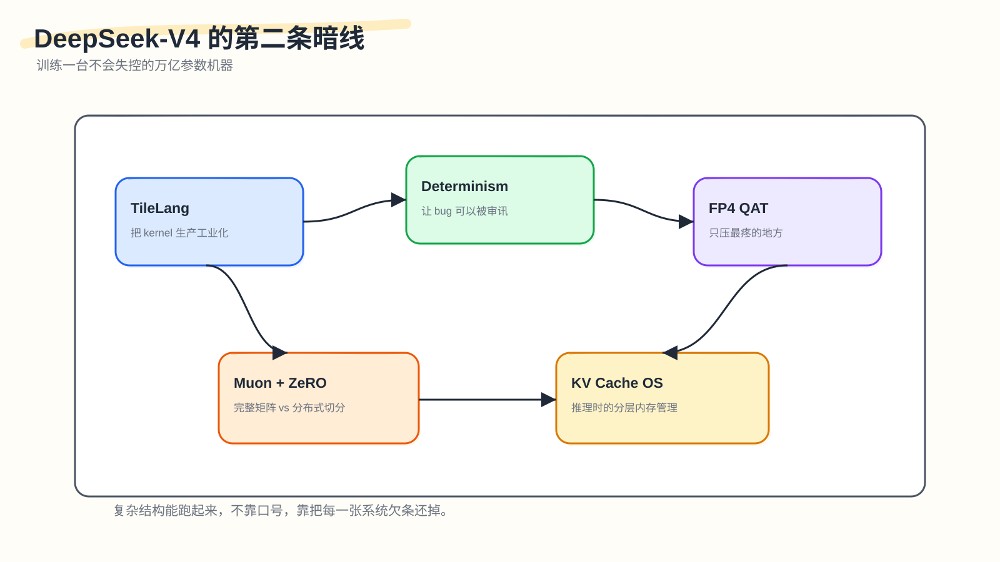
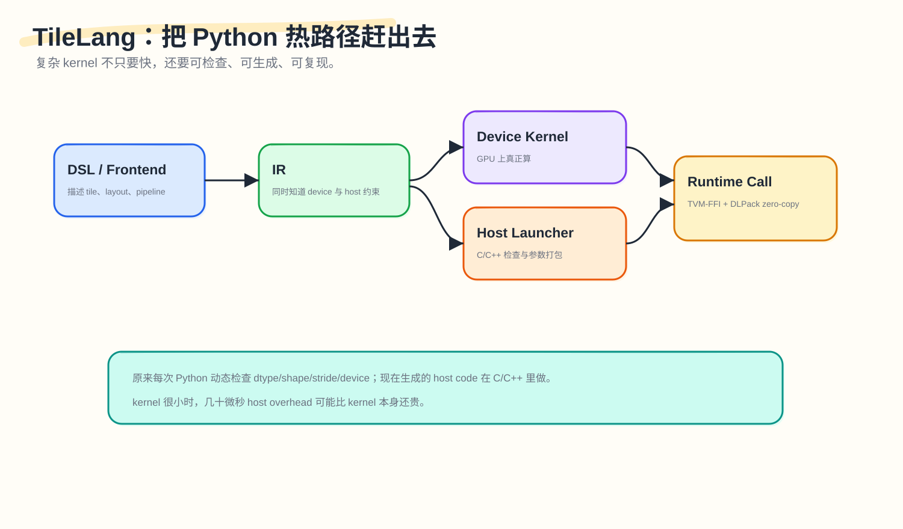
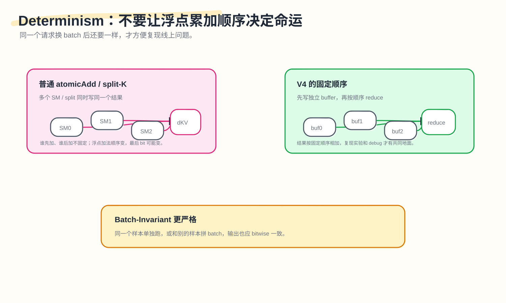

DeepSeek‑V4 的暗线之二：训练一台不会失控的万亿参数机器

第一篇讲的是记忆：为什么 V4 能用 1M 上下文，关键不在输入框够大，而在它把历史分成几种形态——最近的保留原文，中距离的压缩后检索，远距离的重压缩后扫全局。
这一篇讲"控制"。同一个模型的另一面：
这么复杂的结构，怎么训练？怎么复现？怎么部署？怎么让它不变成一堆手写 CUDA 和不可调试的黑盒？
V4 里有很多新东西——CSA/HCA、mHC、MoE、FP4、Muon、长上下文 Context Parallelism、KV cache 分层、deterministic kernel。每一个都会在训练框架里留下一张欠条。如果不还，模型结构再漂亮也只能停在论文图里。
本文按几张欠条来拆：
- kernel 欠条：复杂算子不能靠 PyTorch 小算子拼，也不能全靠手写 CUDA；
- 复现欠条：batch 变化、atomicAdd、split-K 都可能让结果不一样；
- 低精度欠条：FP4 不能随便上，要打在最值得压的位置；
- 优化器欠条：Muon 想要完整矩阵，ZeRO 想把矩阵切碎；
- 长上下文训练欠条：CSA/HCA 的压缩窗口会跨 Context Parallel ranks；
- 推理欠条：KV cache 已经演变为一组状态和存储策略，远超传统意义上的单块缓存。
V4-Pro 是 1.6T 总参数、49B activated，V4-Flash 是 284B 总参数、13B activated，二者都支持 1M context。(Hugging Face) 这个规模下，上面每一张欠条都不是可以推迟的工程选择，而是必须设计清楚的系统约束。
1. 第一张欠条：复杂 kernel 不能靠 Python 调度
先从最朴素的问题开始。
如果你用 PyTorch 写一个复杂 attention 变体，最容易的方式是把它拆成很多小算子：
|
|
这样写起来快，但运行时会有两个问题。
第一，中间结果会反复读写 HBM。
每个小算子都可能把结果写回显存，再被下一个算子读出来。
第二，每个 kernel 调用都有 host-side overhead。
Python 要检查参数，框架 dispatcher 要做选择，pybind/ABI 要转换，最后才 launch GPU kernel。
如果 kernel 本身很大，比如一个大 GEMM 跑几毫秒，几十微秒 host overhead 不明显。但 V4 里很多 kernel 被高度优化后，本身可能很小。此时 CPU 侧固定开销会变成显眼的瓶颈。
这就是 TileLang 在 V4 里的位置。它不是简单"写 CUDA 的 DSL"。它更像一条生产复杂 kernel 的流水线。

TileLang 让开发者在较高层描述 tile、layout、pipeline、memory movement。编译时，它生成两类东西：device kernel（GPU 上真正执行的代码）和 host launcher（CPU 上做检查、参数打包、launch 的轻量代码）。
V4 把很多原本在 Python 里做的 host-side logic 移到生成的 host code 里。这样 dtype、shape、rank、stride、device 这些检查，不需要每次走 Python 动态属性访问。TileLang 文档也说明，它会在生成的 host stub 里自动插入 argument count、pointer kind、dtype、shape、strides、device 等检查，目标是避免手写 Python checks，降低 Python 解释器和属性访问开销。(TileLang)
这里有一个简单例子。
传统方式像这样：
|
|
Host Codegen 后像这样：
|
|
这不是"不检查"。恰恰相反，它把检查固化到生成代码里。检查仍然存在，但不再经过 Python 热路径。
TVM-FFI 和 DLPack 在这里也很重要。TVM-FFI 文档说明，它通过 DLPack 在 PyTorch、JAX、PaddlePaddle 等框架之间共享 tensor 描述与内存；例如从 PyTorch tensor 创建 TVM-FFI tensor 后，可以和原 tensor 共享同一底层 buffer，再转回 PyTorch 也不复制。(TVM-FFI)
复杂 kernel 的优化不能只看 GPU 代码。调用它的 CPU 路径同样是瓶颈，Host Codegen 的意义就在这里。
2. 第二张欠条：复杂下标不能靠人脑一直证明
手写 CUDA 最容易错的地方，在于下标，矩阵乘法的逻辑反而相对清晰。
一个长上下文 attention kernel 里，可能同时涉及 block_id、warp_id、lane_id、tile offset、stride、padding、mask、vectorized load width、shared memory swizzle 这些下标和参数。开发者要回答一堆问题：这个 load 会不会越界？地址是不是 16-byte 对齐？shared memory 写入会不会冲突？barrier 能不能省？loop 能不能 vectorize？
简单表达式，编译器能看懂。复杂表达式，普通规则很容易保守。保守意味着加 mask、不 vectorize、多 barrier，kernel 会慢。人手动证明又容易出错。
V4 里 TileLang 提到一个很有意思的方向：SMT-solver-assisted formal integer analysis。朴素理解，就是把这些整数约束交给 Z3 这类求解器，让它帮编译器证明某些访问是否安全。Z3 是微软研究院开发的 SMT solver，用来判断带算术、bit-vector、array 等背景理论的一阶逻辑公式是否可满足，常用于程序验证和编译器相关场景。(Z3)
举个简化例子。
已知：
|
|
要证明：
|
|
如果 padded_N 是 128 对齐后的长度，solver 可以证明这个访问安全。真实 kernel 的表达式当然更复杂，但思想类似：把"我觉得不会越界"变成"在这些约束下可以证明不会越界"。
这件事的价值不是炫技。它解决的是复杂 kernel 迭代时的信任问题。没有形式化分析，编译器只能保守，或者开发者只能手写很多特殊 case。有了 solver，更多优化可以自动打开——kernel 不只要算得快，还要让编译器知道自己为什么安全。
3. 第三张欠条：最后几 bit 也会影响调试
很多人第一次听到 bitwise reproducibility，会觉得这是洁癖。浮点数最后几 bit 不一样，真的那么重要吗？
在小实验里可能不重要。在万亿参数 MoE 训练里，重要。
因为训练出问题时，你要复现它。
如果某一步 loss spike 了，你需要知道是数据问题、routing 问题、某个 expert outlier、某个通信错序、某个 kernel 的 nondeterministic atomicAdd，还是硬件异常。如果同样输入每次跑出来都略有不同，你就很难缩小范围。
PyTorch 文档也说，完全可复现并不总能跨版本、跨平台保证；deterministic operations 通常更慢，但能节省实验、调试、回归测试时间。PyTorch 提供 torch.use_deterministic_algorithms()，让可用操作走 deterministic 算法，如果只有 nondeterministic 算法则报错。(PyTorch)(PyTorch Det)
V4 关注两个层次。
第一个是 deterministic：同样输入、同样环境、同样 batch，重复跑结果一样。
第二个是 batch-invariant：同一个样本单独跑，和其他样本拼 batch 后跑，输出也一样。
第二个更难。
为什么换 batch 会改变结果？一个常见原因是 split-KV 或 split-K。为了提高并行度，系统可能把同一个 sequence 的 KV 或矩阵乘的 K 维拆给多个 SM 或多个 split 并行算，再合并 partial results。合并顺序如果依赖 batch layout 或 runtime 调度，浮点加法顺序就变了。
浮点加法不满足严格结合律：
|
|
和：
|
|
在实数数学里一样，在浮点里可能最后几 bit 不同。

attention backward 里也有类似问题。多个 query 可能都 attend 到同一个 KV entry。反向传播时，它们都会给同一个 dKV 贡献梯度：
|
|
普通做法可能用 atomicAdd。哪个线程先加、哪个线程后加，不固定。顺序一变，最后 bit 可能变。
V4 的处理方式是：每个 SM 先写到自己的 accumulation buffer，然后再按固定顺序做 deterministic reduction。这样牺牲一点 buffer 和额外 reduction，但换来结果稳定。MoE backward 里也类似，通过 token order preprocessing 和 buffer isolation，避免多 rank 同时写同一接收位置导致顺序不确定。(DeepSeek-AI)
线上某个请求出问题，如果你单独拿它复现，结果和线上不一样，因为线上它当时和别的请求拼了 batch，那么你就没法审问这个 bug。Batch-invariant kernel 解决的就是这种问题。
4. 第四张欠条：FP4 不能随便压，要打在最疼的地方
低精度很诱人。把 16-bit 变成 4-bit，显存和带宽压力都会下降。但 V4 的 FP4 QAT 值得注意的地方是：它没有把"全模型 4-bit"当目标，而是把 FP4 放在两个最值得压的位置。
第一是 MoE expert weights。
MoE 的总参数很大，但每个 token 只激活一部分 experts。expert weights 是显存占用的大头之一。压它们，收益直接。
第二是 CSA indexer QK path。
在 1M context 下，CSA 的 indexer 要反复做 QK 相关性打分，用来选 top-k compressed entries。这个路径承载的是长上下文检索的关键成本，与普通模型权重的性质不同。V4 把 indexer QK 的 activations/cache/load/multiply 走 FP4，是在压"每步长上下文检索"的成本。

MoE expert weights 的训练路径也很有工程味。V4 维护 FP32 master weights，forward 时量化到 FP4，再反量化到 FP8 参与计算。论文说 FP4-to-FP8 dequantization 可以做到 lossless，因为 FP8 E4M3 比 FP4 E2M1 有更大的动态范围，可以吸收 FP4 sub-block scale 的变化。这样 backward 可以复用已有 FP8 mixed-precision training framework，不必为了 FP4 重写整套训练系统。(DeepSeek-AI)
这点很重要。很多低精度方案，真正的难点在于训练系统能否承受改动，forward 跑不跑得通往往还在其次。V4 的路径像是把 FP4 嵌入现有 FP8 框架，尽量减少系统侵入。
V4 还把 index scores 从 FP32 降到 BF16，用于 top-k selector。论文报告 top-k selector 获得 2× speedup，同时 KV entry recall 仍保持 99.7%。(DeepSeek-AI)
这就是"定点打击"：FP4 并非四处开花，而是落在两个真正的系统瓶颈上——巨大的 expert weights 和长上下文 indexer QK，其他地方不动。
5. 第五张欠条：Muon 要完整矩阵，ZeRO 想切碎矩阵
Muon 这块很容易被一句"用了新优化器"带过。但它对训练框架提出了一个很具体的要求：它要看完整矩阵。
AdamW 这类优化器基本是逐元素更新。每个参数都有自己的 moment state，参数矩阵被切碎分到不同 rank 上，逻辑上没那么难。
Muon 不一样。它对矩阵梯度或 momentum 做近似正交化。核心操作和 Newton-Schulz 迭代有关。近期关于 Muon 的理论分析也把重点放在 momentum orthogonalization with a few Newton-Schulz steps，并讨论它和理想 SVD-polar 更新之间的关系。(Muon)
这意味着一个权重矩阵最好作为完整矩阵参与更新。
但 ZeRO 的基本思想是省显存：把 optimizer states、gradients、parameters 切到不同 ranks 上。它天然喜欢把东西切碎。
冲突就来了：Muon 要看完整矩阵才能做正交化，ZeRO 的本能却是把矩阵切碎省显存——两者在参数分片的粒度上直接对撞。V4 的处理方式不是简单放弃 ZeRO，也不是简单放弃 Muon。对 dense parameters，它限制 Muon ZeRO parallelism 的规模，用 knapsack algorithm 把完整矩阵分配给不同 ranks，让每个 rank 管的矩阵总量大致均衡。对 MoE parameters，因为 expert 矩阵数量很多，它把 down/up/gate projection 分别 flatten 后分发，但仍保证不切断一个逻辑独立矩阵。(DeepSeek-AI)

可以这样理解：普通 ZeRO 把 W1 切成几块，rank0/1/2/3 各拿一片；V4 的 Muon-ZeRO 改为把 W1 整块给 rank0，W2 整块给 rank1，W3 整块给 rank2——牺牲的是分配的自由度，保住的是 Muon 需要的矩阵结构。
V4 还提到一个小细节：连续同 shape 参数会自动合并，让 Newton-Schulz 可以 batched execution，提高硬件利用率。MoE gradients 在 data-parallel ranks 之间同步时会随机舍入到 BF16 减少通信，但为避免低精度累加误差，不直接 tree/ring reduce-scatter，而是先 all-to-all 交换本地 gradients，再每个 rank 本地 FP32 求和。(DeepSeek-AI)
Muon 不是一个孤立的算法选择；它反过来规定了分布式系统该怎么切参数。优化器和训练框架之间的这种双向约束，V4 把它说得很明白。任何未来不依赖逐元素更新的优化器，都会遇到同样的张力。
6. 第六张欠条：mHC 增强表达力，也增加 activation 和 pipeline 通信
mHC，全称 manifold-constrained hyper-connections，是 V4 里替代普通 residual connection 的结构。我们不在这篇展开它的数学，只看系统后果。
mHC 让 residual stream 不再是一条，而是多个 residual streams。V4 里 n_hc = 4。这会增强模型表达和信号流动，但带来两个训练系统成本：activation memory 增加，pipeline stage 之间要传的数据也增加。如果不处理，mHC 的收益可能被训练开销吃掉。
V4 的处理方式有三类：
第一，写 fused mHC kernels。
mHC 里有 pre-block mixing、post-block mixing、residual mixing 等操作。如果拆成很多小算子，会有额外 launch 和 HBM traffic。
第二，选择性 recomputation。
不是所有 activation 都存，也不是所有都重算。便宜的中间量可以 backward 时重算，贵的操作尽量避免重算。
第三，调整 DualPipe 1F1B overlap。
mHC 增加了 pipeline communication，原本的 overlap 需要适配，让部分 mHC 操作能并发执行。论文说这些优化把 mHC 的 wall-time overhead 限制到 overlapped 1F1B pipeline stage 的 6.7%。(DeepSeek-AI) 结构上多一条表达路径，6.7% 就是它留给训练系统的账单。
7. 第七张欠条：CSA/HCA 的 Context Parallelism 不像普通 attention
长上下文训练通常要做 Context Parallelism。序列太长，单 GPU 放不下，就把 sequence 维度切给多个 ranks：
|
|
普通 attention 可以围绕这种切分做通信。但 CSA/HCA 多了压缩窗口。
CSA 每 m 个 token 压成一个 entry。HCA 每 m' 个 token 压成一个 entry。问题是：压缩窗口可能跨 rank 边界。
比如 m=4：
|
|
这 4 个 token 应该一起压缩，但它们分布在两个 rank 上。如果 rank1 只看自己的本地 token，它就压不出正确 entry。
V4 的做法分两步。
第一步，邻居通信。
rank i 把自己最后 m 个 uncompressed KV entries 发给 rank i+1。这样下一个 rank 可以正确处理跨边界 compression block。
第二步，各 rank 本地压缩后 all-gather compressed KV。
每个 rank 先本地压缩出固定长度的 compressed entries，再做 all-gather。之后用 fused select-and-pad operator 整理成全局可见的 compressed KV，把 padding 放到尾部。(DeepSeek-AI)
这和分布式数据库里的分片与聚合是同一类问题：光切开数据不够，还要保证跨分片的 group-by 语义不被破坏。普通 CP 只切序列；CSA/HCA 还必须保证压缩分组不被 rank 边界截断。
8. 第八张欠条：Activation Checkpointing 不能只按 module 粗切
训练大模型时，activation memory 是主要显存压力之一。常规 activation checkpointing 的思路是：forward 时不存某些中间结果，backward 时重算。
问题在于，很多框架按 module 粒度 checkpoint。比如一个 Transformer block 要么存，要么重算。这个粒度太粗。
一个 module 内部，有些 tensor 很大但重算便宜；有些 tensor 小但重算贵；有些 tensor 只是 reshape 后共享 storage。按 module 粗切，很难最优。
手写 forward/backward 可以更精细，但开发成本太高，而且容易出错。
V4 的做法是 tensor-level activation checkpointing。开发者只写 forward，并对单个 tensor 做 annotation。框架用 TorchFX trace 计算图，对被标注的 tensor 做 backward traversal，找出最小 recomputation subgraph，在 backward 中插入重算逻辑。论文还提到，重算时会复用原 storage pointer，避免额外 GPU memory copy；对共享底层 storage 的 tensor，例如 reshape 输入输出，也会自动去重。(DeepSeek-AI)
就好比：module-level checkpoint 是整间屋子要么全拍照要么全重建；tensor-level checkpoint 只标记几件家具，重建时找出恢复这几件所需的最小步骤。结构越复杂，中间 tensor 越多，粗粒度 checkpoint 越容易浪费。
9. 第九张欠条：推理时 KV cache 已经像一个小型内存管理器
第一篇讲过，V4 的 Hybrid Attention 产生了多种 KV：CSA main/indexer compressed KV、HCA compressed KV、SWA 未压缩最近窗口，以及 compression branch 里还没凑够 m/m' 的 tail states。这些东西大小不同、生命周期不同、访问方式不同。传统 PagedAttention 更像管理一堆同构 KV blocks。V4 的 KV cache 是异构的。
所以 V4 把推理 cache 分成两类：classical KV cache 存 CSA/HCA 已经压缩好的 entries，负责长期历史；state cache 存 SWA 最近窗口和还没凑够压缩块的 uncompressed tail states，负责当前序列状态。未凑够 m 或 m' 的 tail 不能直接写进 compressed cache，因为它还不是完整 compressed block。
V4 还用 lcm(m, m') 统一 classical KV cache block 粒度。m=4，m'=128，所以一个 block 覆盖 128 个原始 token。它会产生：
|
|
这样一个 logical block 同时适配 CSA 和 HCA。(DeepSeek-AI)
V4 还支持 on-disk KV cache storage，用于 shared-prefix requests。公共前缀的 CSA/HCA compressed KV 可以落盘复用，命中时直接读取 compressed KV，跳过大部分 prefill。不完整 compression block 的尾部仍然重算。
SWA 比较特殊。它是未压缩的，而且每层都有，体积比 compressed KV 大得多。论文给了三种策略：Full SWA Caching 全存（重算少但写入量大），Periodic Checkpointing 隔段存一次（存储和重算折中），Zero SWA Caching 不存 SWA（命中时重算尾部恢复窗口）。
V4 推理时管理的是一组对象，恢复成本不同、复用价值不同、生命周期不同——这已经不像缓存管理，更像内存管理。所以我们可以把它称为 KV Cache OS。这个说法有具体依据：它确实在做类似内存管理的事情——哪些状态常驻、哪些可以落盘、哪些可以重算、哪些按 block 对齐、哪些只在窗口内保留。
这个问题不只属于 V4：任何把 KV 做得足够复杂的系统，最终都会遇到同样的分层管理问题。
10. 把这些欠条放在一起看
现在回头看，V4 的"控制"系统可以压成一张表：
| 欠条 | 如果不还，会怎样 | V4 的处理 |
|---|---|---|
| kernel 欠条 | PyTorch 小算子太碎，host overhead 大 | TileLang + Host Codegen + fused kernels |
| 下标安全欠条 | 复杂 kernel 难证明安全，优化保守 | SMT-assisted integer analysis |
| 复现欠条 | loss spike / 线上 bug 难复现 | batch-invariant + deterministic kernels |
| 低精度欠条 | 4-bit 粗暴压会损能力或破训练系统 | FP4 QAT 定点压 expert weights 和 CSA indexer |
| 优化器欠条 | Muon 要完整矩阵，ZeRO 想切碎 | hybrid Muon-ZeRO，矩阵级分配 |
| mHC 欠条 | activation 和 pipeline 通信变大 | fused kernels + selective recompute + pipeline overlap |
| CP 欠条 | 压缩窗口跨 rank 边界 | 邻居通信 + all-gather compressed KV |
| 推理欠条 | KV cache 类型异构，传统 layout 不够 | classical cache + state cache + on-disk prefix |
每个技巧背后，有一个统一目标：让模型结构的复杂性，不泄漏成不可控的训练和推理复杂性。
如果第一篇的关键词是"记忆"，这篇的关键词就是"控制"。
11. 这套控制系统的边界
同样，这里也不能只讲好处。
11.1 Host Codegen 会增加编译系统复杂度
把检查从 Python 移到 C/C++ host launcher，运行时更快，但编译器和 ABI 设计更重。错误信息、调试体验、跨框架兼容，都要靠工具链保证。
11.2 SMT solver 不是万能
SMT 能证明很多整数关系，但复杂非线性整数问题可能很难。编译器仍然需要设置超时、fallback、保守路径。不能把"有 solver"理解成"所有优化都能自动证明"。
11.3 Determinism 通常会牺牲部分性能
PyTorch 文档也明确说，deterministic operations 往往更慢。V4 的难点在于尽量把性能损失压低，而不是免费得到 determinism。(PyTorch)
11.4 FP4 的有效性依赖分布和实现
V4 的 FP4-to-FP8 lossless dequant 依赖特定格式、scale 设计和权重分布。换模型、换硬件、换 block size，不能直接照抄结论。
11.5 Muon 的分布式实现会影响负载均衡
完整矩阵分配给 rank，比任意切片更受矩阵大小分布影响。V4 用 knapsack 和 padding 控制不均衡，但这仍是系统 trade-off。模型里最大的几个矩阵决定了 knapsack 能做到多优——算法对分布式系统的摩擦，会随模型规模放大。
11.6 KV Cache OS 会把问题转移到存储和调度
on-disk KV cache、SWA checkpointing、state cache 管理，都需要 scheduler 配合。长上下文服务不是只优化 kernel 就够了，还要管缓存命中、落盘、恢复和 eviction policy。
这些边界说明一件事：V4 的控制系统不是一堆银弹。它更像一套工程平衡术。
12. 第二篇结论：控制复杂性，才是 V4 真正难的部分
很多模型论文会把重点放在结构创新上。但 V4 这类模型的难点在于：结构创新会迅速变成系统债。
引入 Hybrid Attention，就要重写 KV cache layout 和 Context Parallelism。
引入 mHC，就要处理 activation memory 和 pipeline communication。
使用 Muon，就要重新设计 ZeRO 参数分片。
使用 FP4，就要让训练和推理路径对齐。
追求 agentic long context，就要保证 deterministic、batch-invariant、可恢复、可 debug。
写复杂 kernel，就要让研究迭代速度和生产性能同时成立。
所以第二篇的核心可以用一句话概括：
DeepSeek‑V4 的控制系统，要解决的是整体复杂性失控的问题，各个模块的局部最优排在其次。
前两篇分别回答了记忆（模型怎么承受一百万 token 历史）和控制（这么复杂的模型怎么训练和部署）。第三篇要回答的是行动：模型怎么进入真实环境，调用工具，跑 sandbox，被中断后恢复，并让每条轨迹可以被记录和评价。那里会进入 OPD、GRM、Quick Instruction、Rollout WAL、DSec、EROFS、trajectory log 和 real-world tasks——也就是 DeepSeek‑V4 最像"Agent 操作系统"的部分。
参考阅读
- Hugging Face, DeepSeek‑V4: a million-token context that agents can actually use, 2026.（Hugging Face）
- DeepSeek-AI, DeepSeek‑V4: Towards Highly Efficient Million‑Token Context Intelligence, technical report, 2026.（DeepSeek-AI）
- TileLang documentation, Tensor Checks (Host-Side Auto-Validation).（TileLang）
- Apache TVM FFI documentation, Tensor and DLPack.（TVM-FFI）
- Microsoft Research, Z3 theorem prover.（Z3）
- PyTorch documentation, Reproducibility.（PyTorch）
- PyTorch documentation, torch.use_deterministic_algorithms.（PyTorch Det）
- Kim and Oh, Convergence of Muon with Newton-Schulz, 2026.（Muon）